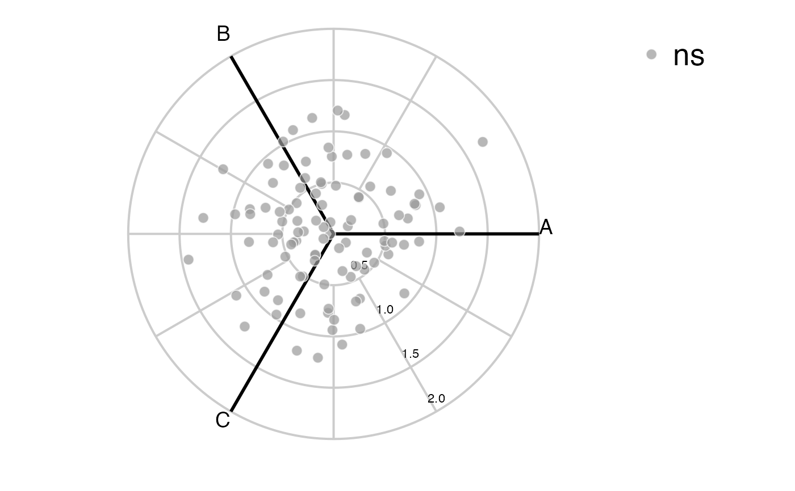

R/voom_polar.R
voom_polar.RdThis function is used instead of polar_coords if you have raw
RNA-Seq count data. The function takes a design formula, metadata and raw
RNA-Seq count data and uses 'limma voom' to analyse the data. The results are
converted to a 'volc3d' object ready for plotting a 3d volcano plot or polar
plot.
voom_polar( formula, metadata, counts, pcutoff = 0.05, padj.method = "BH", filter_pairwise = TRUE, ... )
| formula | Design formula which must be of the form |
|---|---|
| metadata | Matrix or dataframe containing metadata as referenced by
|
| counts | Matrix containing raw gene expression count data |
| pcutoff | Cut-off for p-value significance |
| padj.method | Can be any method available in |
| filter_pairwise | Logical whether adjusted p-value pairwise statistical tests are only conducted on genes which reach significant adjusted p-value cut-off on the group likelihood ratio test |
| ... | Optional arguments passed to |
Calls polar_coords to return an S4 'volc3d' object
Statistical results for the group and pairwise comparisons are calculated
using the 'limma voom' pipeline and the results passed to
polar_coords to generate a 'volc3d' object ready for plotting a
3d volcano plot or polar plot.
polar_coords, deseq_polar,
voom in the limma package
if (requireNamespace("limma", quietly = TRUE) & requireNamespace("edgeR", quietly = TRUE)) { library(limma) library(edgeR) counts <- matrix(rnbinom(n=1500, mu=100, size=1/0.5), ncol=15) cond <- factor(rep(1:3, each=5), labels = c('A', 'B', 'C')) cond <- data.frame(cond) polar <- voom_polar(~0 + cond, cond, counts) volcano3D(polar) radial_ggplot(polar) } #> #> Attaching package: ‘limma’ #> The following object is masked from ‘package:DESeq2’: #> #> plotMA #> The following object is masked from ‘package:BiocGenerics’: #> #> plotMA 